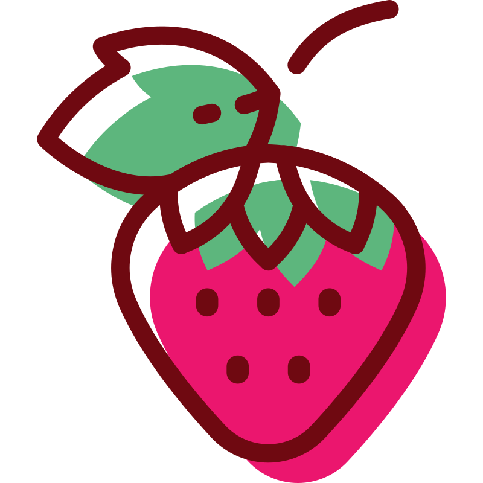
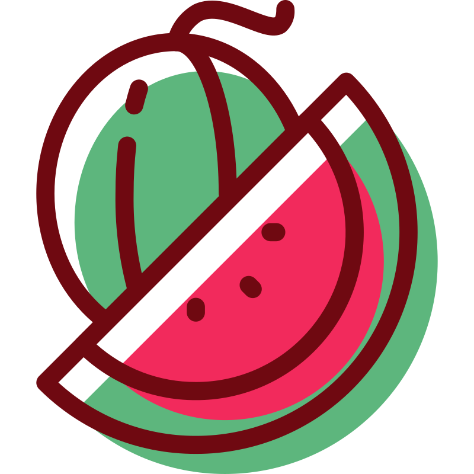
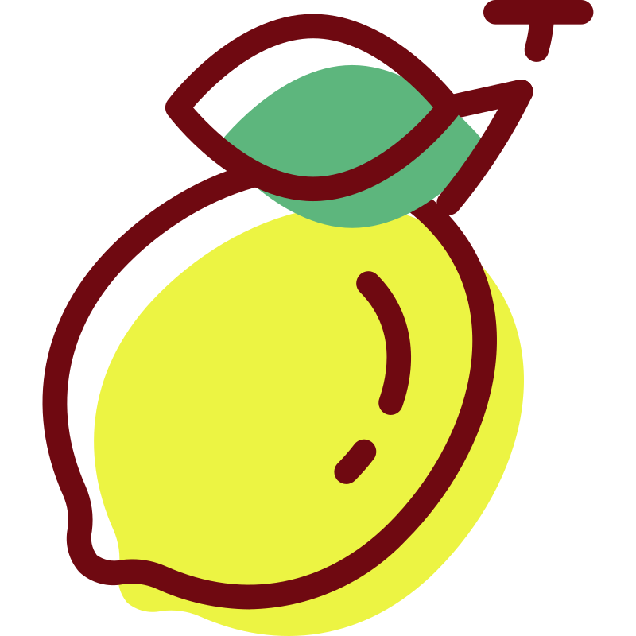
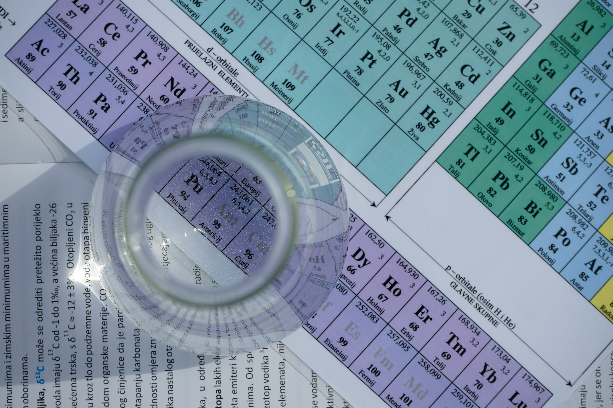
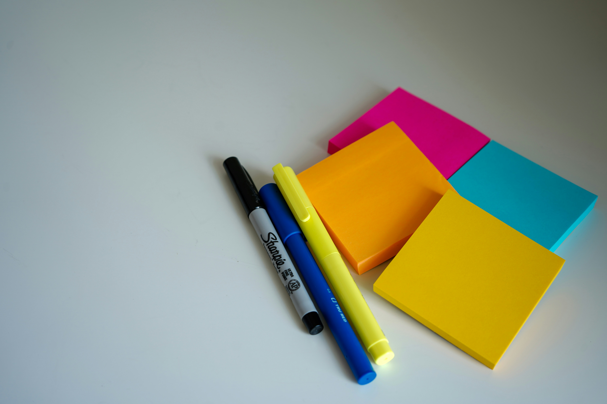

Vocabulary BankToday's Vocabulary
| Word | Pronunciation | Translation | Sentence |
|---|
Language Notes
Post-It Notes
A post-it note is a small piece of paper with light glue on the back. You can stick it to things like a book, a fridge, or a desk – and then remove it easily without leaving a mark. People use post-it notes to write short reminders or messages. In Ukrainian, we usually call it a стікер (або клейкий папірець для нотаток).
Practice
Exercise 1: Choose the correct word
Read the sentences and drag the missing words into the blanks. You can easily swap words or return them to the bank if you change your mind.
- study nature and do experiments to learn new things. They usually work in a .
- I can't return a book to the library. I need some to fix it.
- The sticker was very old, so it was hard to without leaving .
- Mia likes her favourite recipes with small stickers. She thinks stickers are a nice .
- Every Sunday, Liam sings with the church . Tomorrow, he's going to sing with them, .
- It started to rain, so I opened my umbrella.

Grammar: Past Continuous TenseTheory & Usage
Past Continuous (минулий тривалий час) використовується, щоб описати дію, яка тривала (була в процесі) у певний момент у минулому. Нас не цікавить, коли дія почалася чи закінчилася – важливо лише те, що вона відбувалася саме тоді.
1. Structure
| Особа | Допоміжне дієслово | Смислове дієслово |
|---|---|---|
| I / he / she / it | was | verb + -ing |
| you / we / they | were | verb + -ing |
- (+) I was reading a book at 10 am yesterday.
- (-) He wasn't listening to the teacher.
- (?) Were you doing your homework all evening?
2. Spelling Rules (-ing)
| Правило | Приклад |
|---|---|
| Зазвичай просто додаємо -ing | read → reading, play → playing |
| Якщо дієслово закінчується на нечитабельну -e, вона зникає | make → making, write → writing |
| Якщо коротке дієслово закінчується на приголосну-голосну-приголосну, остання приголосна подвоюється | run → running |
| У британській англійській кінцева -l подвоюється | travel → travelling |
| Дієслова на -ie змінюють -ie на -y | lie → lying |
3. Time Markers & Context
Головне правило: описуємо дію, яка тривала в конкретний момент у минулому. Типові слова-маркери:
- at 7 pm yesterday (о 7-й вечора вчора)
- at that moment / at that time (у той момент / тоді)
- this time last week (в цей самий час минулого тижня)
- all morning / all day (весь ранок / весь день)
- from 5 to 6 pm (з 5 до 6 вечора)
- during the lesson (під час уроку)
- last night (минулої ночі / вчора ввечері)
- the whole weekend (усі вихідні)
- in 2010 / at this time of year (у 2010 році / в цей час року)
Маркери часу зазвичай ставляться наприкінці або на початку речення. Якщо маркер стоїть на початку, він відокремлюється комою:
"At 7 pm, I was eating dinner." або "I was eating dinner at 7 pm."
Не обов'язково називати час у кожному реченні. Можна назвати його один раз – а далі просто продовжувати описувати ситуацію:
"At 8 pm yesterday, my family was having dinner. My mom was cooking pasta. My dad was setting the table. My little brother was doing his homework at the same time."
4. Stative Verbs (Дієслова стану)
В англійській мові дієслова поділяються на динамічні (дії) та дієслова стану. Past Continuous використовується тільки для динамічних дій, які можна спостерігати в процесі (наприклад, run, read, work).
А от Stative Verbs (дієслова стану) зазвичай не вживаються у тривалих часах — навіть тоді, коли ми говоримо про минуле. Вони описують думку, почуття, або факт, який просто "є".
| Група | Дієслова |
|---|---|
| Думки, знання | know, understand, believe, remember, think (=мати думку) |
| Почуття, ставлення | like, love, hate, want, need, prefer |
| Володіння | have (=мати, володіти), own, belong |
| Сприйняття | see, hear, smell, taste |
| Інші | seem, look (=здаватися), cost, mean |
- ❌ He was knowing the answer. → ✅ He knew the answer.
- ❌ I was wanting a new bike. → ✅ I wanted a new bike.
- ❌ She was believing it. → ✅ She believed it.
Якщо ти сумніваєшся, чи можна вжити слово в Past Continuous, запитай себе: "Чи можу я побачити, як хтось це робить прямо зараз?" Ти можеш побачити, як людина біжить чи готує їжу, але не можеш фізично побачити процес "знання" чи "володіння".
Practice
Exercise 2: Gap-fill
Fill in the correct form of was/were + the verb in brackets.
- My parents all day yesterday.
- She to the radio — she a book.
- you at midnight?
- The children in the park all afternoon.
- He at 10 am — he was still asleep.
- At 6 pm yesterday, I my homework.
- What they about at the meeting?
- she to work at 8 am this morning?
Exercise 3: Scene Creation
Look at the time, the character(s), and the activity hint. Write a sentence in Past Continuous to describe what was happening.
- yesterday at 6 pm / Anna's family / watch, a movie
- this time last Sunday / the church choir / sing, a beautiful song
- at that moment / the books / fall out of, her bag
- all evening / the students / prepare, for a Math test
- in 1934 / Agatha Christie / write, "Murder on the Orient Express"
Exercise 4: Rewrite the Fact into a Scene
Rewrite each Past Simple sentence as a Past Continuous sentence by adding a time marker and turning it into an ongoing scene.
Time marker ideas: at 7 am · yesterday morning · at 10 am last Sunday · at that moment · all afternoon · from 4 to 5 pm · last night · this time last week · at midnight · at noon
- I did my homework.
- They didn't do anything at all.
- She listened to music.
- They played video games.
- Did it rain?
- We watched a TV show.
Bonus Exercise: Translation
Translate these sentences into Ukrainian. Pay special attention to the verbs: to convey the Past Continuous "in progress" nuance in Ukrainian, we use недоконаний вид (що робив/робила?).
- I was doing my homework all evening yesterday.
- At 8 pm, we were watching a movie.
- What were they doing from 9 to 10 am?
- Anna wasn't sleeping at midnight; she was playing video games.

Reading & Speaking PracticeReading Practice
Read the text out loud and translate it into Ukrainian.
The Failed Glue That Became a Bestseller
In 1968, Spencer Silver was working as a scientist at a company called 3M. He was trying to invent the strongest glue in the world. Every day, he tested new kinds of glue in his laboratory.
One day, Silver was mixing different things, as usual. But the result was a surprise. The glue that he created was very weak. You could pull it off paper very easily, and it didn't leave any mark.
At first, everyone at the company thought the weak glue was useless. For a long time, Silver was showing his strange invention to his colleagues, but nobody understood it.
In 1974, another man named Art Fry was working at the same company. Art sang in the choir every Sunday and used small pieces of paper to mark pages in his songbook. But the papers always fell out of the book.
One afternoon, Fry was thinking about the problem with his songbook. Suddenly, he remembered Silver's weak glue. He knew immediately. This glue could hold the paper in place! And it wouldn't damage the pages. Fry was excited.
By 1980, 3M was selling this new invention all around the world. Today, we call it the "Post-it Note". People use billions of these notes every year.


Speaking Practice
Exercise 5: True or False?
Read the statements out loud. Say why it is true or false based on the text, and then drag it to the correct category.